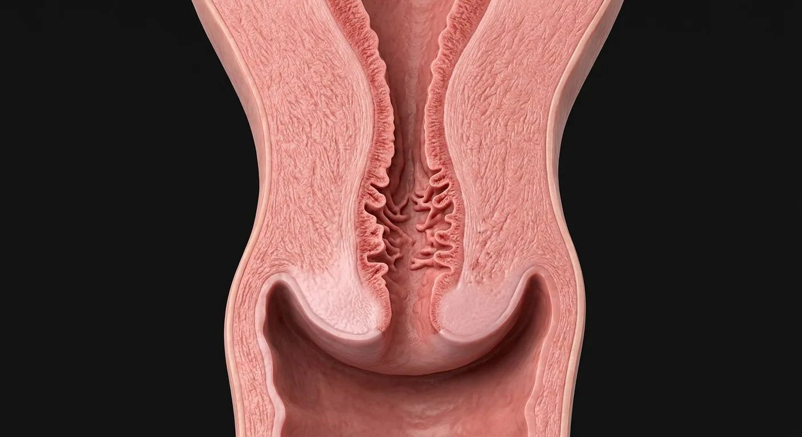

Plicae palmataeTransformation zoneAnterior cervical lipInternal osParametrial connective tissueNabothian cystEndocervical columnar epitheliumCervical fibromuscular stromaEndocervical cryptsEndocervical canalCervical canal mucus plugCervical mucusCervical arterial branchesSquamocolumnar junctionEctocervical squamous epitheliumExternal osPosterior cervical lipEctocervixCervical lymphatic channelsVaginal fornices- 01Ectocervix
- 02Endocervical canal
- 03Endocervical columnar epithelium
- 04Ectocervical squamous epithelium
- 05Squamocolumnar junction
- 06Transformation zone
- 07External os
- 08Internal os
- 09Plicae palmatae
- 10Cervical fibromuscular stroma
- 11Vaginal fornices
- 12Cervical mucus
- 13Endocervical crypts
- 14Nabothian cyst
- 15Cervical canal mucus plug
- 16Anterior cervical lip
- 17Posterior cervical lip
- 18Cervical arterial branches
- 19Parametrial connective tissue
- 20Cervical lymphatic channels
How this part of the body works
Learn which epithelium lines each surface and why the transformation zone matters for cervical cytology and colposcopy — without turning anatomy into a screening guideline.
Read the anatomy, part by part
These 20 structures describe anatomy related to the chapter’s regional illustration. Each entry separates location, function and a clinical point.
Ectocervix
Part of cervix visible at the vaginal vault.
What it doesCovered by nonkeratinizing stratified squamous epithelium.
Clinical connectionVisual examination and directed biopsy sample this surface.
Endocervical canal
Canal linking internal to external os.
What it doesConducts sperm and menstrual flow; glandular mucus changes cyclically.
Clinical connectionStenosis may obstruct sampling or menstrual outflow.
Endocervical columnar epithelium
Mucus-secreting simple columnar lining of the canal.
What it doesProduces cervical mucus under hormonal regulation.
Clinical connectionGlandular lesions need distinct cytologic evaluation.
Ectocervical squamous epithelium
Nonkeratinizing squamous epithelium continuous with vaginal mucosa.
What it doesProtects exposed cervical surface.
Clinical connectionSquamous metaplasia alters the visible junction.
Squamocolumnar junction
Border where glandular and squamous epithelia meet.
What it doesMigrates with age, hormones and pregnancy.
Clinical connectionColposcopy assesses whether the entire junction is visible.
Transformation zone
Region of squamous metaplasia between original and current SCJ.
What it doesPhysiologic remodeling of exposed columnar epithelium.
Clinical connectionMost cervical precancer arises here; anatomy guides sampling.
External os
Opening from cervical canal into vagina.
What it doesEntry for cervical mucus and menstrual passage.
Clinical connectionShape varies, and appearance alone is not diagnostic.
Internal os
Opening from cervix to lower uterine cavity.
What it doesMechanical boundary important in pregnancy.
Clinical connectionCervical funneling is described relative to this point.
Plicae palmatae
Branching endocervical mucosal folds.
What it doesIncrease glandular surface for mucus production.
Clinical connectionAppear as arbor-vitae folds on section.
Cervical fibromuscular stroma
Collagen-rich cervical wall with some smooth-muscle fibers.
What it doesStructural integrity and remodeling during gestation.
Clinical connectionCervical insufficiency is a structural diagnosis, not simply os appearance.
Vaginal fornices
Vaginal recesses around the projecting cervix; posterior deepest.
What it doesAllow examination of cervix and adjacent pelvic structures.
Clinical connectionPosterior fornix lies near the recto-uterine pouch.
Cervical mucus
Glandular secretion filling the canal.
What it doesViscosity varies with estrogen/progesterone and can form a pregnancy plug.
Clinical connectionChanges in discharge are not specific to one diagnosis.
Endocervical crypts
Branched folds and glandlike clefts of mucus-secreting cervical epithelium.
What it doesIncrease secretory surface.
Clinical connectionObstruction may form nabothian cysts.
Nabothian cyst
Mucus retention cyst beneath ectocervical surface after gland outlet blockage.
What it doesReflects benign epithelial remodeling.
Clinical connectionCommon incidental finding, not automatically malignancy.
Cervical canal mucus plug
Viscous secretion occupying canal, with composition changing across cycle and pregnancy.
What it doesCreates selective barrier and modulates sperm passage.
Clinical connectionAppearance alone does not establish ovulation or infection.
Anterior cervical lip
Anterior rim of cervix bordering external os.
What it doesLandmark during speculum examination.
Clinical connectionContour changes with parity and age.
Posterior cervical lip
Posterior rim of cervix bordering external os.
What it doesDefines relation to posterior vaginal fornix.
Clinical connectionPosterior fornix lies close to rectouterine pouch.
Cervical arterial branches
Branches of uterine and vaginal arteries entering lateral cervical stroma.
What it doesPerfuse cervical epithelium and muscular tissue.
Clinical connectionLateral cervix lies near descending ureter.
Parametrial connective tissue
Fibrous tissue beside cervix enclosing vessels, nerves and lymphatics.
What it doesConnects cervix to pelvic sidewall.
Clinical connectionDisease extension and surgery use this plane.
Cervical lymphatic channels
Networks draining toward obturator, internal/external iliac and sacral basins.
What it doesCarry tissue fluid and immune cells.
Clinical connectionRoutes matter in staging cervical disease.
Five questions about Cervix — transformation zone
Short answers grounded in the structures described above. Use the illustrated guide for anatomical context.
What is the cervical transformation zone?
It is the region where squamous epithelium of the ectocervix and columnar epithelium of the endocervix meet and change over time.
Why is the transformation zone important in cervical screening?
Many cervical precancerous changes arise near the squamocolumnar junction. Screening samples this region, but this atlas does not interpret individual test results.
What is the ectocervix?
Part of cervix visible at the vaginal vault. Function: Covered by nonkeratinizing stratified squamous epithelium.
Where is the endocervical columnar epithelium located?
Mucus-secreting simple columnar lining of the canal. Function: Produces cervical mucus under hormonal regulation.
What is the function of the squamocolumnar junction?
Function: Migrates with age, hormones and pregnancy. Border where glandular and squamous epithelia meet.
Related anatomy guides
Follow these connected structures and body systems in the illustrated atlas.
 Labor stage 1 · cervix dilatesSeparate first-stage birth chapter: uterine contractions, cervical effacement and dilation to complete opening.↗
Labor stage 1 · cervix dilatesSeparate first-stage birth chapter: uterine contractions, cervical effacement and dilation to complete opening.↗ Uterus — layers & cavityThe womb in cross-section: endometrium, junctional zone, myometrium, cavity, isthmus and the key clinical boundaries.↗
Uterus — layers & cavityThe womb in cross-section: endometrium, junctional zone, myometrium, cavity, isthmus and the key clinical boundaries.↗ Vagina — walls & fornicesA layered fibromuscular canal: rugae, muscularis, fornices, vestibular opening, adjacent urethra and rectum.↗
Vagina — walls & fornicesA layered fibromuscular canal: rugae, muscularis, fornices, vestibular opening, adjacent urethra and rectum.↗ Pelvic support & surgical planesThe surgical map: ureter under uterine artery, uterosacral and cardinal supports, broad ligament folds, ovarian pedicle and pelvic floor.↗
Pelvic support & surgical planesThe surgical map: ureter under uterine artery, uterosacral and cardinal supports, broad ligament folds, ovarian pedicle and pelvic floor.↗Further reading
General anatomy references and related source chapters for continued study. These links do not make the digital illustrations clinical images or certify every anatomical variant.
This educational page is not medical advice and has not undergone formal clinical peer review. Spotted an error? Contact the editor.
Open the realistic interactive plate, label lines, focus view and self-test.